Ph.D. Candidate · Electrical and Computer Engineering · George Mason University
Renke Wang
My research focuses on control, optimization, and real-time decision-making for cyber-physical and multi-agent systems. I develop methods to improve system-level performance by jointly coordinating motion, task timing, path selection, and access to limited shared resources, while accounting for system dynamics, uncertainty, and safety constraints.
My work combines model predictive and robust control, mathematical and distributed optimization, and learning-based decision-making, with applications to warehouse robot scheduling, multi-agent coordination, networked control systems, and human–robot collaboration.

Research
Research Interests
-
Shared-Resource Scheduling and Control Co-Design
Joint design of scheduling, resource allocation, and feedback control for networked and multi-agent cyber-physical systems subject to shared and heterogeneous resource constraints, coupled timing constraints, system dynamics, and safety requirements.
-
Multi-Agent Planning and Sequential Decision-Making
Path selection, priority assignment, shared-resource access, and conflict-free coordination using optimization, exact search, and learning-based policies for robots, vehicles, and human–robot systems.
-
Robust Control under Timing Uncertainty
Robust and tube-based model predictive control for linear systems under uncertain control-update timing, together with Koopman-based modeling and robustness analysis for nonlinear systems.
-
Positive and Switched Systems
Stability analysis and state-feedback controller synthesis for positive switched systems and Markov jump linear systems using copositive Lyapunov functions, dwell-time methods, and L1-gain criteria.
Research Methods
Optimization and Decomposition
- Linear programming (LP) and mixed-integer linear programming (MILP)
- Nonlinear programming (NLP) and mixed-integer nonlinear programming (MINLP)
- Nonconvex constrained optimization
- Distributed optimization and decomposition
- ADMM / Consensus ADMM
Scheduling and Search
- Resource-constrained and priority-based scheduling
- Resource allocation and task sequencing
- Decision-tree and graph search
- Path planning, routing, and multi-step lookahead
Learning and Computational Methods
- Supervised policy learning from exact search decisions
- Deep reinforcement learning (PPO / actor-critic)
- Event-driven and Monte Carlo simulation
- Benchmarking, sensitivity, and scalability analysis
Control, Modeling, and Stability
- Model predictive control (MPC)
- Contention-resolving MPC
- Robust and tube-based MPC
- Koopman-based nonlinear system modeling
- Lyapunov- and LMI-based stability analysis
Selected Projects
1. Robotics Planning & Multi-Agent Coordination
Robotics-focused projects in route planning, online scheduling, multi-agent coordination, and trajectory tracking.
-
Project 1
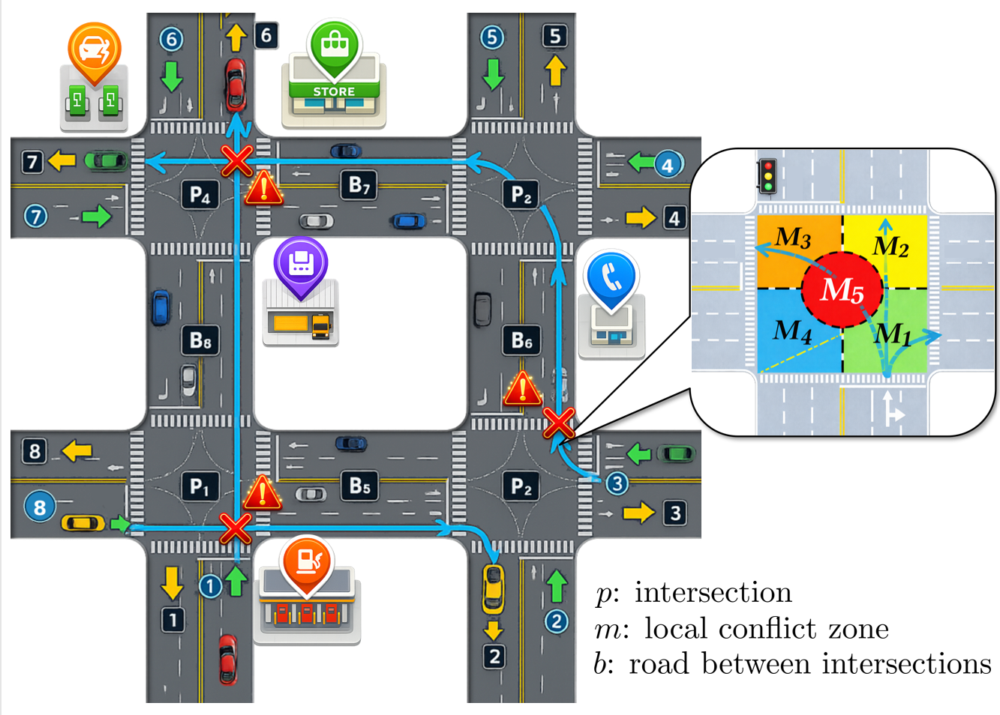
Coupled traffic intersections, vehicle routes, and a local spatial-resource model. Multi-Agent Coordination in Warehouse and Multi-Intersection Traffic Networks
This project develops online planning and scheduling methods for coordinating mobile robots and automated vehicles that compete for spatial resources at warehouse merging zones and traffic intersections. It covers both individual conflict regions and networks of coupled regions with route-dependent timing constraints.
Multi-Agent Coordination Real-Time Scheduling Decision-Tree Search Warehouse Robotics Traffic Networks
-
Project 2
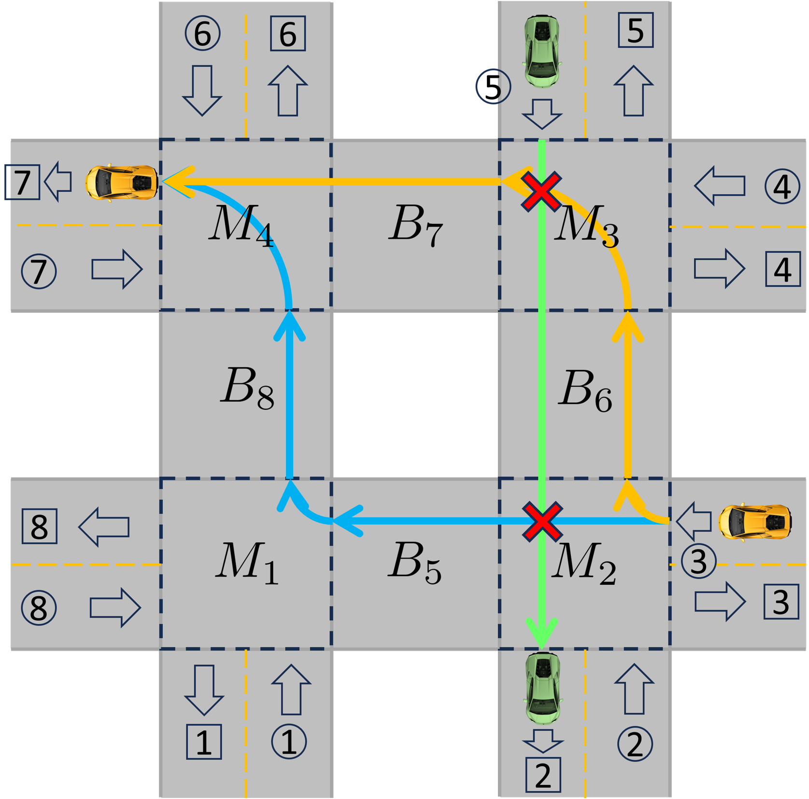
Path Selection and Scheduling Co-Design for Multi-Merging-Zone Systems
Joint path selection and resource-access scheduling for agents traversing multiple merging zones, where each selected path induces a different resource-occupation sequence. The project investigates exact, search-based, and learning-guided methods.
Path Planning Search-Based Methods Learning-Guided Methods Resource-Access Scheduling
-
Supporting Project
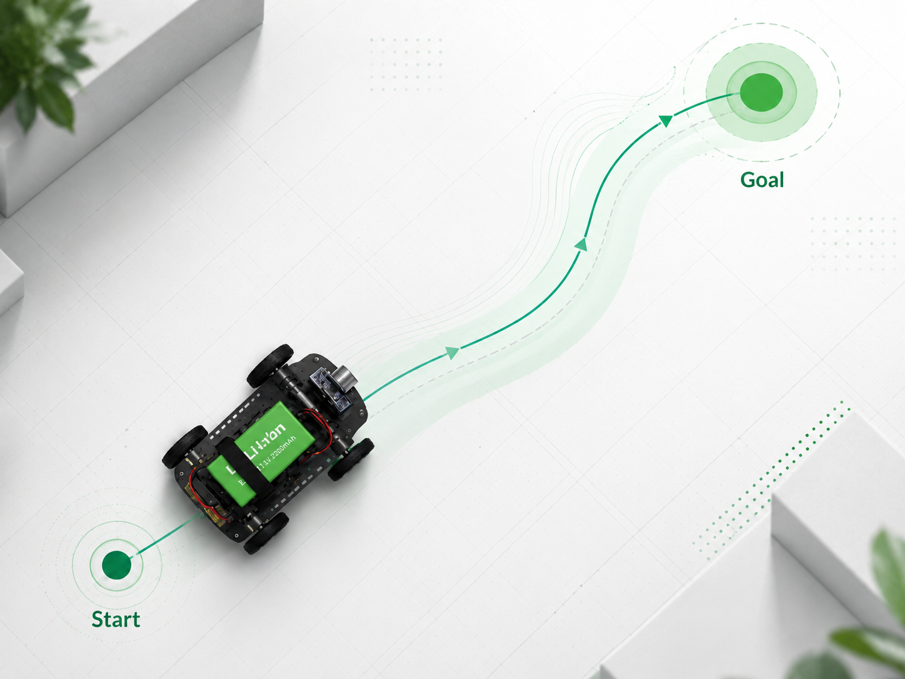
Unicycle Robot Trajectory-Tracking Simulation
Unicycle trajectory-tracking project combining error-dynamics analysis, closed-loop simulation, and numerical evaluation across multiple initial conditions, including a large-angle test.
Unicycle Model Trajectory Tracking Numerical Evaluation
2. Scheduling & Resource Allocation
Optimization and scheduling of limited shared or heterogeneous resources, emphasizing allocation and sequencing decisions.
-
Project 1
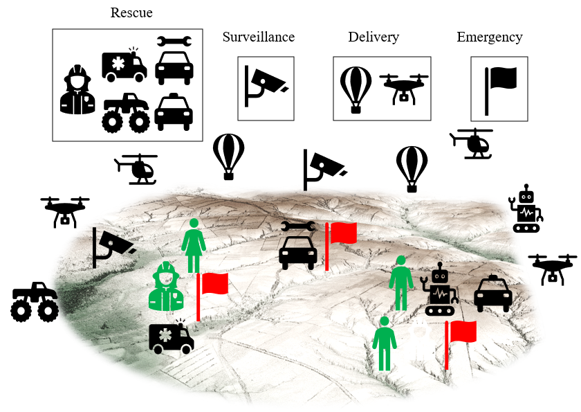
Human Attention Allocation and Scheduling in Multi-Robot Systems
Allocation and real-time scheduling of limited human attention across multiple robots, where assistance requests compete for heterogeneous human resources with different availability.
Optimal Resource Allocation Real-Time Scheduling Heterogeneous Resources Decision-Tree Search
-
Project 2
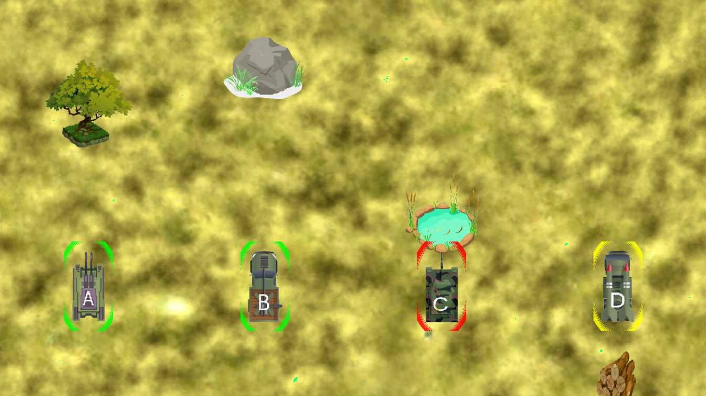
Human-Attention Scheduling for Multi-Robot Supervision
This project develops an optimization-based recommendation system for allocating limited human attention among multiple robots with time-critical obstacle-avoidance tasks. A decision-tree scheduler determines which robot should receive attention and when, and the system was evaluated in a controlled study with 40 human participants.
Human–Multi-Robot Collaboration Attention Scheduling Decision-Tree Search Human-Subject Study
-
Supporting Project
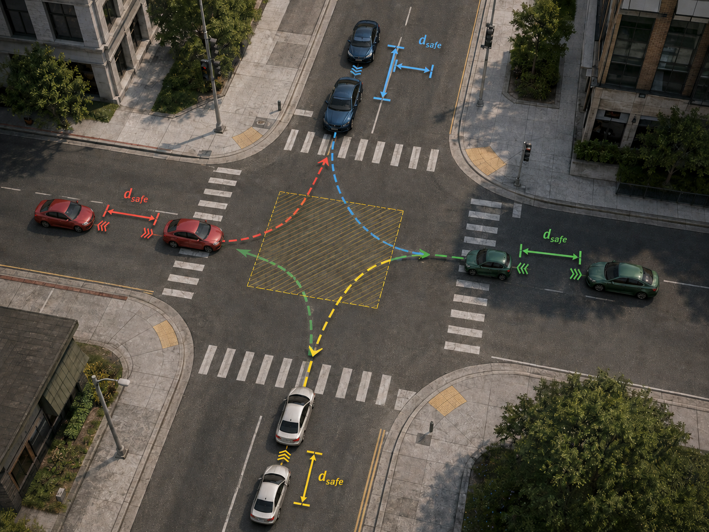
Safe Intersection Scheduling
Studied and implemented a fixed-precedence intersection-scheduling formulation. The nonlinear program schedules vehicle entry and exit times while enforcing intersection occupancy, rear-end separation, and operating bounds.
Intersection Scheduling Nonlinear Optimization Collision Avoidance Fixed-Precedence Scheduling
3. Scheduling & Control Co-Design / Networked Control
Joint scheduling, resource allocation, and feedback control for networked systems with shared sensing, computation, and actuation resources.
-
Project 1
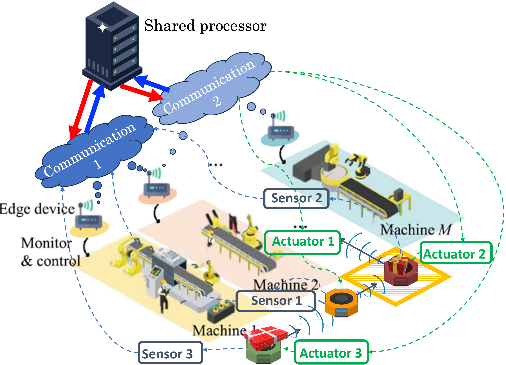
Shared communication, computation, sensing, and actuation resources in a networked manufacturing system. Distributed Scheduling and Control Co-Design for Multi-Layer Shared Resources
This project studies networked control systems in which multiple control tasks share sensing, computation, and actuation resources. A distributed co-design framework combines local contention-resolving MPC with consensus ADMM to coordinate resource-level decisions and maintain cross-layer timing consistency.
Networked Control Systems Distributed Optimization MPC C-ADMM
Manuscript under review at IEEE TCNS
-
Project 2
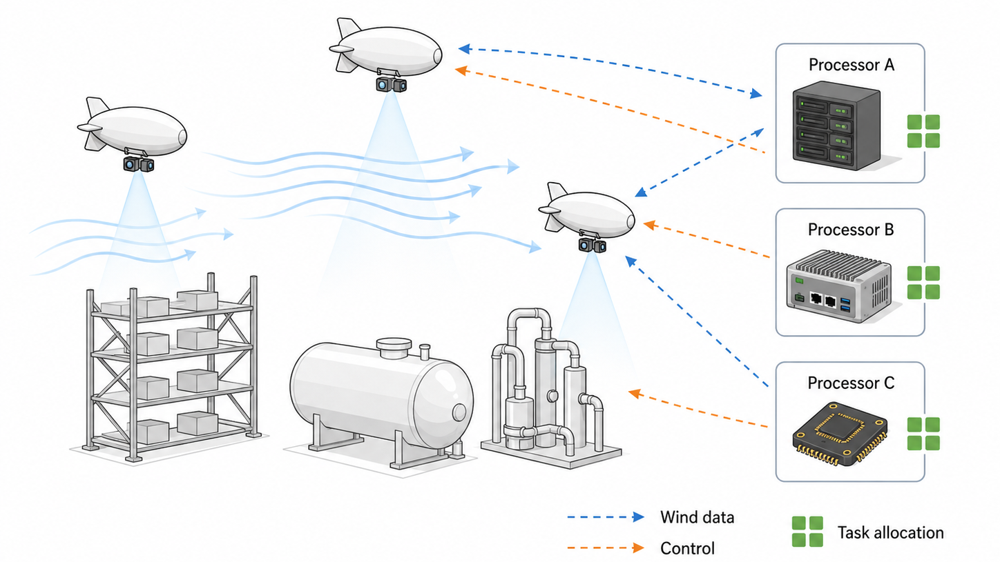
Robust Co-Design for Blimp Motion Control with Heterogeneous Computational Resources
Joint computational-resource allocation, task scheduling, and motion control for multiple blimps sharing limited processors with heterogeneous execution efficiencies.
Scheduling-Control Co-Design Heterogeneous Resources Motion Control Robust Control
Manuscript under review at IJRNC
4. Robust & Nonlinear Control
Robust MPC and nonlinear modeling for control systems affected by uncertain update timing, model mismatch, and nonlinear dynamics.
-
Project 1
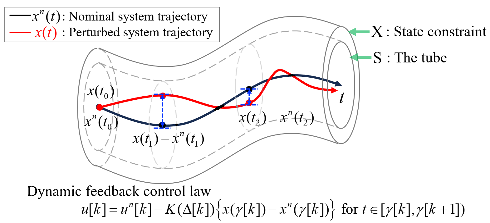
Linear Systems with Timing Perturbations
Tube-based MPC with dynamic feedback gain for an LTI system affected by timing perturbations.
Tube-Based MPC Robust Control Timing Perturbations Dynamic Feedback
-
Project 2
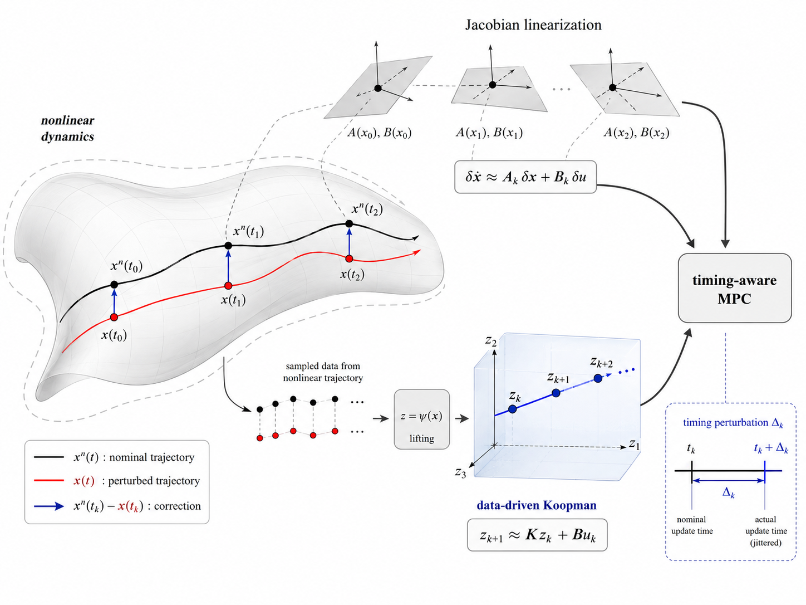
Nonlinear Systems with Timing Perturbations
Two complementary solutions are being developed: Jacobian linearization for a local LTV model and data-driven Koopman identification from nonlinear trajectory data.
Nonlinear Control Timing Perturbations Jacobian Linearization Data-Driven Koopman
5. Learning from Data
Course-based machine learning work emphasizing model comparison, transfer learning, and quantitative evaluation.
-
Course Project · ECE 527
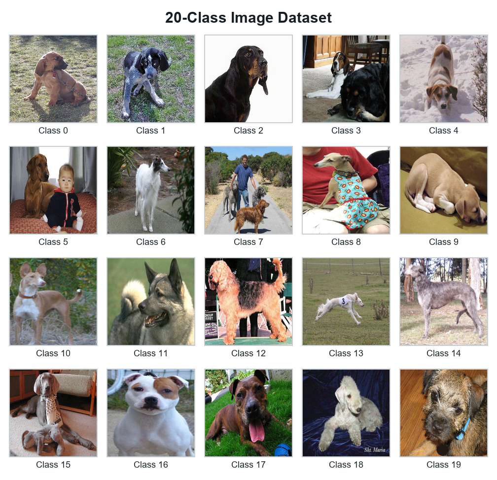
Transfer Learning for 20-Class Dog Image Classification
Built a multi-class image classifier by fine-tuning an ImageNet-pretrained MobileNetV2 with data augmentation and a task-specific convolutional head. The model achieved 84.21% accuracy on a held-out split and 92.00% on a separate 100-image evaluation set.
Transfer Learning Image Classification MobileNetV2 Data Augmentation Model Evaluation
Publications
Journal Articles
-
R. Wang and N. Yao, “Distributed Scheduling and Control Co-Design for Networked Control Systems with Multi-Layered Shared Resources,” IEEE Transactions on Control of Network Systems (TCNS), under review.
-
R. Wang, M. Hou, and N. Yao, “Robust Co-Design of Scheduling and Control for Lighter-than-Air Agents with Heterogeneous Resources,” International Journal of Robust and Nonlinear Control, under review.
-
J. Lian and R. Wang, “Stochastic stability of positive Markov jump linear systems with fixed dwell time,” Nonlinear Analysis: Hybrid Systems, 2021.
Conference Papers
-
R. Wang and N. Yao, “Contention-Resolving Model Predictive Control for Coordinating Automated Vehicles at a Multi-Lane Traffic Intersection,” in Proc. 2025 IEEE Conference on Control Technology and Applications (CCTA), 2025.
-
R. Kumar, R. Wang, and N. Yao, “One Human and Multi-Robot Collaboration: Evaluating the Impact of Attention-Guided On-Screen Recommendations on Human Multitasking Efficiency, Cognitive Load, and Trust,” in Proc. 34th IEEE International Conference on Robot and Human Interactive Communication (RO-MAN), 2025.
-
R. Wang and N. Yao, “Robust Model Predictive Control for Networked Control Systems with Timing Perturbations,” in Proc. 2024 American Control Conference (ACC), 2024.
-
N. Yao and R. Wang, “Optimal real-time human attention allocation and scheduling in a multi-human and multi-robot collaborative system,” in Proc. 2024 IEEE Conference on Control Technology and Applications (CCTA), 2024.
-
J. Lian, R. Wang, and F. Wu, “Exponential stability analysis and controller design for LTI positive system with controller failure,” in Proc. 12th Asian Control Conference (ASCC), 2019.